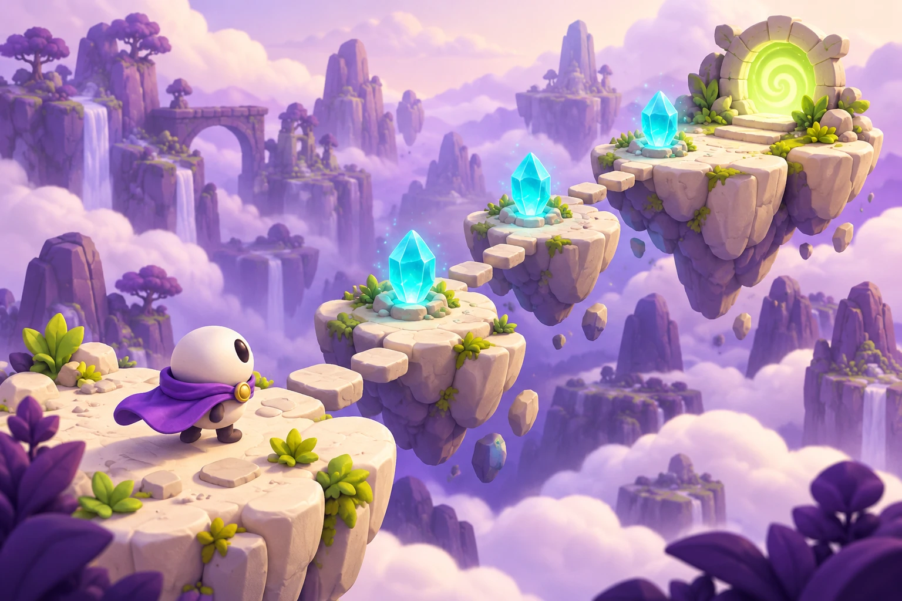

Кристальный маршрут
Соедини кристаллы светом и разбуди затерянный сад.
- Твоё главное действие
- Поворачивай плитки касанием и прокладывай непрерывный путь.
- Первый прототип
- Одно поле, шесть плиток, три кристалла. Доведи свет до выхода — и попробуй снова.